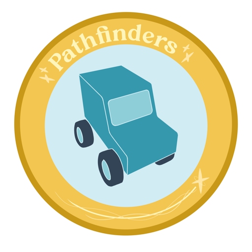

Pathfinders Coding
Nano (old bootloader)
Nano (new bootloader)
Uno
-- select port --
Detect Ports
Generate Code
Upload to Car
Arduino Code
Status / Log
Press "Generate Code" to see the generated Arduino code.